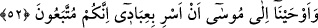

sarılması gerekir ki Allah onun kalbinde bir kapı, kendisini anlama gözü açsın da
muhaddeslerden (Allah’ın kendisiyle konuştuğu, ilhâm ettiği kimselerden) olsun. Sonra
Allah onu Rasûlullah (s.a.)’i gönderdiği gibi mahlûkatı irşâda gönderirsin.”
Sen yolu/tarîkı öğrendiğine göre ona sülûk etmen gerekir. Çünkü ehl-i sülûk mülûktür,
asıl melikler onlardır. Ancak âileden, çocuklardan ve mallardan tam olarak Allah’a
dönme olmadan sülûk asla tamam olmaz. Tıpkı sihirbazların “biz şüphesiz Rabbimize
döneceğiz” demeleri gibi. Görmez misin sûreten sâlik olan bütün malını evinde bırakır.
Çünkü kul zayıftır. Zayıf kimse ise ağır yük kaldıramaz. Allah’dan kolaylaştırmasını ve
âsân kılmasını dileriz.
52. Musa’ya: “Kullarımı geceleyin yola çıkar; çünkü takip edileceksiniz” diye
vahyettik.
“Musa’ya: “Kullarımı geceleyin yola çıkar; çünkü takip edileceksiniz.” Fir’avn ve
ordusu peşinizden gelecek. “diye vahyettik.” “__WORD__ Gizlice bildirmek, “__WORD__ ve “__WORD__
gece yürüdü demektir. Yâni biz vahiy yoluyla Mûsâ’ya şöyle dedik: “Ey Mûsâ!
İsrâiloğulları’nı geceleyin Kızıldeniz’e varıncaya kadar götür ve yürüt. Orada emrim
sana gelecek, onunla amel edersin.” Mûsâ (a.s.)’a kullarımızı, yani İsrailoğulları’nı
sizin kurtuluşunuz ve kâfirlerin helâki olacak olan Kızıldeniz tarafına götür, diye
vahyettik.
Bu hâdise, seneler sonradır. Mûsâ (a.s.) onları hakka çağırarak ve kendilerine
âyetler/mûcizeler göstererek onların arasında kalmış, onların ise sadece azgınlık ve
taşkınlıkları artmıştır.
Mûsâ (a.s.) denize varacağını vahiyle öğrenmiştir. Çünkü yolun hangi tarafa olacağını
bilmeden geceleyin yola çıkmakla emrolunması uzak bir ihtimaldir. Mısır’dan çıkarken
Cebrâil (a.s.)’ın ona sözü şudur: “Ey Mûsâ, benimle senin buluşma yerimiz denizdir.”
Yani Kızıldeniz’in kenarıdır.
“Çünkü takip edileceksiniz” ifâdesi, geceleyin yola çıkarma emrinin sebebini
açıklamaktadır. Yâni onları geceleyin yola çıkar. Fir’avn ve ordusu sabahleyin sizin
peşinizden geldiklerinde denize ulaşmanızdan önce size yetişemeyecek kadar onlardan
önde olursunuz. Bilakis siz denize girdiğiniz zaman onlar ardınızda olurlar. Sizin
girdiğiniz yerden onlar da girerler, ben de denizi onların üzerine kapatır ve onları suda
boğarım.